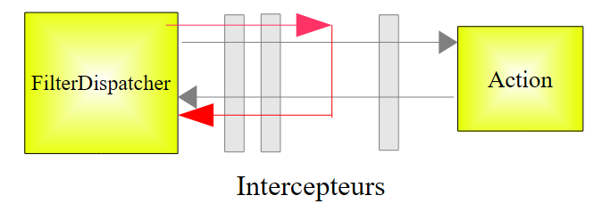
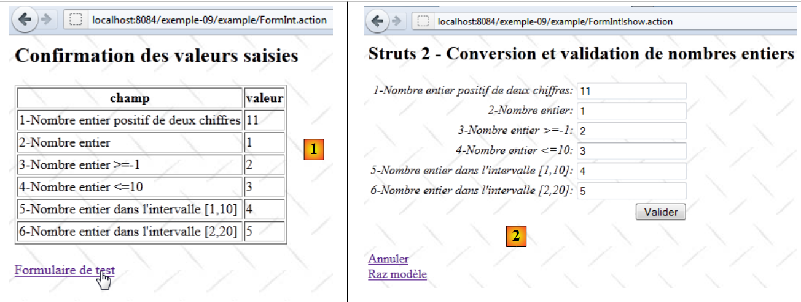
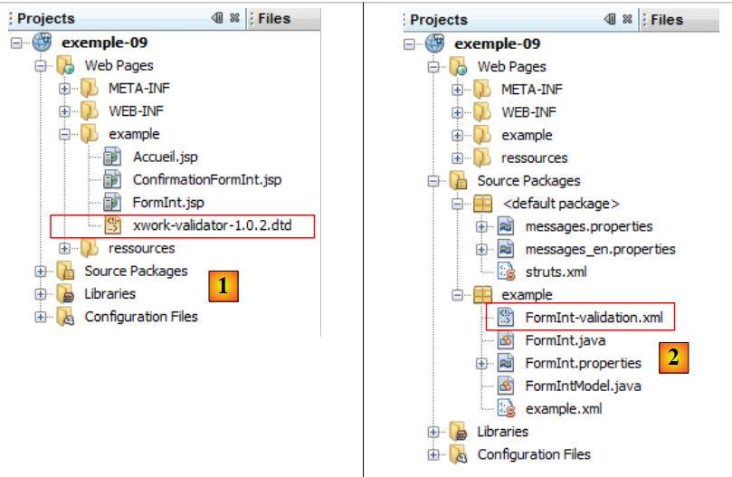

11. المثال 09 - تحويل الأعداد الصحيحة والتحقق من صحتها
نتناول الآن سلسلة من الأمثلة حول تحويل معلمات النموذج والتحقق من صحتها. المشكلة هي كما يلي. لمعالجة عنوان URL بالصيغة [http://machine:port/.../Action]، يقوم وحدة التحكم [FilterDispatcher] بإنشاء مثيل للفئة التي تنفذ الإجراء المطلوب وتنفيذ إحدى طرقها، وهي الطريقة المسماة execute بشكل افتراضي. يمر استدعاء هذه الطريقة execute عبر سلسلة من المعترضات:
 |
يتم تعريف قائمة المعترضات في الملف [struts-default.xml] الموجود في جذر الأرشيف [struts2-core.jar]. قائمة المعترضات المحددة فيه هي كما يلي:
<interceptor-stack name="defaultStack">
<interceptor-ref name="exception"/>
<interceptor-ref name="alias"/>
<interceptor-ref name="servletConfig"/>
<interceptor-ref name="i18n"/>
<interceptor-ref name="prepare"/>
<interceptor-ref name="chain"/>
<interceptor-ref name="debugging"/>
<interceptor-ref name="scopedModelDriven"/>
<interceptor-ref name="modelDriven"/>
<interceptor-ref name="fileUpload"/>
<interceptor-ref name="checkbox"/>
<interceptor-ref name="multiselect"/>
<interceptor-ref name="staticParams"/>
<interceptor-ref name="actionMappingParams"/>
<interceptor-ref name="params">
<param name="excludeParams">dojo\..*,^struts\..*</param>
</interceptor-ref>
<interceptor-ref name="conversionError"/>
<interceptor-ref name="validation">
<param name="excludeMethods">input,back,cancel,browse</param>
</interceptor-ref>
<interceptor-ref name="workflow">
<param name="excludeMethods">input,back,cancel,browse</param>
</interceptor-ref>
</interceptor-stack>
من بين المعترضات، هناك واحدة تتولى إدخال القيم valeuri للمعلمات parami التي تصاحب الطلب في شكل parami=valeuri في الإجراء. من المعروف أن القيمة valeuri سيتم إدخالها في الحقل parami الخاص بالإجراء عبر الطريقة setParami إذا كانت موجودة. وإلا، فلن يتم إدخال أي قيمة ولن يتم الإبلاغ عن أي خطأ.
السلسلة parami=valeuri هي سلسلة أحرف. حتى الآن، تم إدخال valeuri في الحقول parami من النوع String:
لم يمثل إدخال السلسلة valeuri كقيمة للسلسلة parami أي مشكلة. إذا لم يكن parami من النوع String، فيجب تحويل valeuri من النوع parami إلى النوع Ti. هذه هي مشكلة التحويل. على سبيل المثال، قد نرغب في أن يكون العمر عددًا صحيحًا، وسنكتب في الإجراء:
من ناحية أخرى، قد نرغب في تحديد العمر بين 1 و150. وهنا تكمن مشكلة التحقق من الصحة. يمكن تحويل المعلمة parami إلى النوع الصحيح دون أن تكون صالحة بالضرورة. لذا، هناك خطوتان يجب اتباعهما. إذا عدنا إلى مخطط معالجة الطلب:
 |
سيتولى معتان على التوالي تحويل المعلمات والتحقق من صحتها. إذا فشلت إحدى الخطوتين، فلن يستمر الطلب في مساره نحو الإجراء (المسار الأحمر أعلاه). ويتم إعادة عرض النموذج الذي تم من خلاله إرسال المعلمات الخاطئة مصحوبًا برسائل خطأ.
المعترضان المعنيان بتحويل المعلمات والتحقق من صحتها هما المعترضان conversionError و validation في السطرين 19 و20 من قائمة المعترضين المعروضة سابقًا. وتجدر الإشارة في الأسطر 20-22 إلى أن المعترض validation لا يتم تطبيقه إذا كانت الطريقة المستدعاة هي إحدى الطرق التالية: input، back، cancel، browse. سنستخدم هذه الخاصية لاحقًا.
نبدأ بدراسة تحويل الأعداد الصحيحة والتحقق من صحتها. سنقضي بعض الوقت في هذا المثال الأول لأن عملية التحقق من الصحة تتضمن العديد من العناصر. وبمجرد فهم هذه العناصر، سننتقل بسرعة أكبر إلى الأمثلة التالية.
11.1. النموذج
 |
- إلى [1]، ونموذج الإدخال
- إلى [2]، والنتيجة عند التحقق من صحة النموذج دون إدخال أي قيم
11.2. مشروع NetBeans
مشروع NetBeans هو كما يلي:
 |
- في [1]، العروض الثلاثة للتطبيق
- في [2]، أكواد المصدر وملفات الرسائل المُعَرَّبة وملفات تكوين Struts.
11.3. تكوين Struts
يتم تكوين التطبيق بواسطة الملفين [struts.xml] و [example.xml].
الملف [struts.xml] هو كما يلي:
<?xml version="1.0" encoding="UTF-8" ?>
<!DOCTYPE struts PUBLIC
"-//Apache Software Foundation//DTD Struts Configuration 2.0//EN"
"http://struts.apache.org/dtds/struts-2.0.dtd">
<struts>
<constant name="struts.custom.i18n.resources" value="messages" />
<include file="example/example.xml"/>
<package name="default" namespace="/" extends="struts-default">
<default-action-ref name="index" />
<action name="index">
<result type="redirectAction">
<param name="actionName">Accueil</param>
<param name="namespace">/example</param>
</result>
</action>
</package>
</struts>
تحدد الأسطر من 12 إلى 18 الإجراء [/example/Accueil] كإجراء افتراضي عندما لا يحدد المستخدم إجراءً معينًا.
الملف [example.xml] هو كما يلي:
<?xml version="1.0" encoding="UTF-8" ?>
<!DOCTYPE struts PUBLIC
"-//Apache Software Foundation//DTD Struts Configuration 2.0//EN"
"http://struts.apache.org/dtds/struts-2.0.dtd">
<struts>
<package name="example" namespace="/example" extends="struts-default">
<action name="Accueil">
<result name="success">/example/Accueil.jsp</result>
</action>
<action name="FormInt" class="example.FormInt">
<result name="input">/example/FormInt.jsp</result>
<result name="cancel" type="redirect">/example/Accueil.jsp</result>
<result name="success">/example/ConfirmationFormInt.jsp</result>
</action>
</package>
</struts>
- الأسطر 8-10: تعمل الإجراء [Accueil] على عرض العرض [Accueil.jsp]
- السطر 11: تؤدي الإجراء [FormInt] إلى تنفيذ الطريقة execute من الفئة [example.FormInt] بشكل افتراضي. وسنرى أنه سيتم تنفيذ طريقتين أخريين، وهما الطريقتان input و cancel. وسيتم تحديد هاتين الطريقتين في معلمات الاستعلام.
- السطر 12: سيؤدي المفتاح input إلى عرض طريقة العرض [FormInt.jsp] (السطر 5). طريقة العرض هذه هي طريقة عرض النموذج.
- السطر 13: سيتم إرجاع المفتاح cancel بواسطة طريقة cancel المرتبطة بالرابط [Annuler]. وستكون طريقة العرض النهائية هي طريقة العرض [Accueil.jsp] بعد إعادة التوجيه (type=redirect).
- السطر 14: يتم إرجاع المفتاح success بواسطة الطريقة execute التابعة للإجراء [FormInt]. وإذا وصل الطلب إلى الطريقة execute، فهذا يعني أنه اجتاز بنجاح جميع المعترضات، ولا سيما تلك التي تتحقق من صحة المعلمات. وعندئذٍ تكتفي الطريقة execute بإرجاع المفتاح success الذي سيقوم بعرض شاشة التأكيد [ConfirmationInt.jsp].
11.4. ملفات الرسائل
ملف [messages.properties] هو كما يلي:
Accueil.titre=Accueil
Accueil.message=Struts 2 - Conversions et validations
Accueil.FormInt=Saisie de nombres entiers
Form.titre=Conversions et validations
FormInt.message=Struts 2 - Conversion et validation de nombres entiers
Form.submitText=Valider
Form.cancelText=Annuler
Form.clearModel=Raz mod\u00e8le
Confirmation.titre=Confirmation
Confirmation.message=Confirmation des valeurs saisies
Confirmation.champ=champ
Confirmation.valeur=valeur
Confirmation.lien=Formulaire de test
بالإضافة إلى هذا الملف، تستخدم الصفحات الملف [FormInt.properties] التالي:
int1.prompt=1-Nombre entier positif de deux chiffres
int1.error=Tapez un nombre entier positif de deux chiffres
int2.prompt=2-Nombre entier
int2.error=Tapez un nombre entier
int3.prompt=3-Nombre entier >=-1
int3.error=Tapez un nombre entier >=-1
int4.prompt=4-Nombre entier <=10
int4.error=Tapez un nombre entier <=10
int5.prompt=5-Nombre entier dans l''intervalle [1,10]
int5.error=Tapez un nombre entier dans l''intervalle [1,10]
int6.prompt=6-Nombre entier dans l''intervalle [2,20]
int6.error=Tapez un nombre entier dans l''intervalle [2,20]
لا يتم استخدام الملف [FormInt.properties] إلا عندما تكون الإجراء الذي أنشأ العرض هو الإجراء [FormInt]. وهذه طريقة لتقسيم ملف الرسائل إذا كان حجمه كبيرًا جدًّا. يتم ترجمة رسائل الإجراء «Action» إلى اللغات المختلفة في الملف [Action.properties].
11.5. الطرق والإجراءات
نقدم الآن طرق العرض والإجراءات الخاصة بالتطبيق. وفقًا لتكوين التطبيق:
<?xml version="1.0" encoding="UTF-8" ?>
<!DOCTYPE struts PUBLIC
"-//Apache Software Foundation//DTD Struts Configuration 2.0//EN"
"http://struts.apache.org/dtds/struts-2.0.dtd">
<struts>
<package name="example" namespace="/example" extends="struts-default">
<action name="Accueil">
<result name="success">/example/Accueil.jsp</result>
</action>
<action name="FormInt" class="example.FormInt">
<result name="input">/example/FormInt.jsp</result>
<result name="cancel" type="redirect">/example/Accueil.jsp</result>
<result name="success">/example/ConfirmationFormInt.jsp</result>
</action>
</package>
</struts>
نلاحظ وجود ثلاث طرق عرض [Accueil.jsp, FormInt.jsp, ConfirmationFormInt.jsp] وعمليتين [Accueil, FormInt].
11.5.1. Accueil.jsp
الطريقة [Accueil.jsp] هي كما يلي:

ورمزها هو كما يلي:
<%@ page contentType="text/html; charset=UTF-8" pageEncoding="UTF-8"%>
<%@ taglib prefix="s" uri="/struts-tags" %>
<html>
<head>
<title><s:text name="Accueil.titre"/></title>
<s:head/>
</head>
<body background="<s:url value="/ressources/standard.jpg"/>">
<h2><s:text name="Accueil.message"/></h2>
<ul>
<li>
<s:url id="url" action="FormInt!input"/>
<s:a href="%{url}"><s:text name="Accueil.FormInt"/></s:a>
</li>
</ul>
</body>
</html>
الرابط الموجود في السطر 14 يُنشئ كود HTML التالي:
<a href="<a href="view-source:http://localhost:8084/exemple-09/example/FormInt.action">/exemple-09/example/FormInt!input.action</a>">Saisie de nombres entiers</a>
وهو إذن رابط إلى الإجراء [FormInt] الذي تم تكوينه على النحو التالي في [example.xml]:
<action name="FormInt" class="example.FormInt">
<result name="input">/example/FormInt.jsp</result>
<result name="cancel" type="redirect">/example/Accueil.jsp</result>
<result name="success">/example/ConfirmationFormInt.jsp</result>
</action>
وبالتالي، فإن النقر على الرابط سيؤدي إلى إنشاء مثيل للفئة [example.FormInt] وتنفيذ الطريقة input الخاصة بها. ونظرًا لعدم وجودها، فسيتم تنفيذ الطريقة input الخاصة بالفئة الأم ActionSupport. ولا تقوم هذه الطريقة بأي شيء سوى إرجاع المفتاح input. وبالتالي، سيتم عرض طريقة العرض [/example/FormInt.jsp].
من ناحية أخرى، تعد الطريقة input إحدى الطرق التي يتجاهلها مانع التحقق من الصحة:
<interceptor-ref name="validation">
<param name="excludeMethods">input,back,cancel,browse</param>
</interceptor-ref>
وبالتالي لن يتم التحقق من صحة المعلمات. وهذا أمر مهم لأنه لا توجد معلمات هنا، وسنرى لاحقًا أن قواعد التحقق من الصحة ستفرض وجود ست معلمات.
11.5.2. الإجراء [FormInt]
الإجراء [FormInt] مرتبط بالفئة التالية [FormInt]:
package example;
import com.opensymphony.xwork2.ActionSupport;
import com.opensymphony.xwork2.ModelDriven;
import java.util.Map;
import org.apache.struts2.interceptor.SessionAware;
import org.apache.struts2.interceptor.validation.SkipValidation;
public class FormInt extends ActionSupport implements ModelDriven, SessionAware {
// منشئ بدون معلمات
public FormInt() {
}
// نموذج الإجراء
public Object getModel() {
if (session.get("model") == null) {
session.put("model", new FormIntModel());
}
return session.get("model");
}
public String cancel() {
// تنظيف النموذج
((FormIntModel) getModel()).clearModel();
// النتيجة
return "cancel";
}
@SkipValidation
public String clearModel() {
// إعادة تعيين النموذج
((FormIntModel) getModel()).clearModel();
// النتيجة
return INPUT;
}
// SessionAware
private Map<String, Object> session;
public void setSession(Map<String, Object> session) {
this.session = session;
}
// التحقق من الصحة
@Override
public void validate() {
// هل الإدخال int6 صالح؟
if (getFieldErrors().get("int6") == null) {
int int6 = Integer.parseInt(((FormIntModel) getModel()).getInt6());
if (int6 < 2 || int6 > 20) {
addFieldError("int6", getText("int6.error"));
}
}
}
}
سنعلق على هذا الكود حسب الحاجة. في الوقت الحالي:
- السطر 9، تُنفذ الفئة [FormInt] واجهتين:
- ModelDriven التي تحتوي على طريقة واحدة فقط، وgetModel في السطر 16
- SessionAware التي تحتوي على طريقة واحدة فقط، وهي setSession في السطر 41
- الأسطر 16-21: تنفيذ الواجهة ModelDriven. تجدر الإشارة إلى أن هذه الواجهة تسمح بنقل نموذج إحدى طرق العرض إلى فئة خارجية، وهي في هذه الحالة الفئة [FormIntModel] التالية:
package example;
public class FormIntModel {
// منشئ بدون معلمات
public FormIntModel() {
}
// حقول النموذج
private String int1;
private Integer int2;
private Integer int3;
private Integer int4;
private Integer int5;
private String int6;
// إفراغ النموذج
public void clearModel(){
int1=null;
int2=null;
int3=null;
int4=null;
int5=null;
int6=null;
}
// دالات الاسترجاع والتعيين
...
}
يحتوي النموذج [FormIntModel] على ستة حقول تتوافق مع حقول الإدخال الستة في العرض [FormInt.jsp]. وهذه الحقول الستة هي التي ستستقبل القيم المرسلة. أربعة منها من النوع Integer. وبالتالي، ستنشأ بالنسبة لها مشكلة التحويل من String إلى Integer. تتيح الطريقة clearModel إعادة تعيين النموذج.
لنعد إلى الطريقة getModel الخاصة بالإجراء [FormInt]:
// نموذج الإجراء
public Object getModel() {
if (session.get("model") == null) {
session.put("model", new FormIntModel());
}
return session.get("model");
}
- الأسطر 3-5: يتم البحث عن النموذج في الجلسة. إذا لم يكن موجودًا، يتم إنشاء مثيل للنموذج ووضعه في الجلسة.
- السطر 6: في حين يتم إنشاء مثيل للإجراء مع كل طلب جديد يتم إرساله إلى الإجراء، فإن نموذجه سيبقى في الجلسة.
نلاحظ أن الفئة لا تُعرِّف طريقة input، لكن الفئة الأم تحتوي على طريقة تُرجع المفتاح input. يؤدي تنفيذ هذه الطريقة إلى عرض طريقة العرض [FormInt.jsp] التي نعرضها الآن.
11.5.3. طريقة العرض [FormInt.jsp]
الطريقة [FormInt.jsp] هي كما يلي:
 |
- في [1]، النموذج الفارغ
- في [2]، النموذج بعد التحقق من صحة المعلمات الخاطئة.
الرمز الخاص به هو كما يلي:
<%@ page contentType="text/html; charset=UTF-8" pageEncoding="UTF-8"%>
<%@ taglib prefix="s" uri="/struts-tags" %>
<html>
<head>
<title><s:text name="Form.titre"/></title>
<s:head/>
</head>
<body background="<s:url value="/ressources/standard.jpg"/>">
<h2><s:text name="FormInt.message"/></h2>
<s:form name="formulaire" action="FormInt">
<s:textfield name="int1" key="int1.prompt"/>
<s:textfield name="int2" key="int2.prompt"/>
<s:textfield name="int3" key="int3.prompt"/>
<s:textfield name="int4" key="int4.prompt"/>
<s:textfield name="int5" key="int5.prompt"/>
<s:textfield name="int6" key="int6.prompt"/>
<s:submit key="Form.submitText" method="execute"/>
</s:form>
<br/>
<s:url id="url" action="FormInt" method="cancel"/>
<s:a href="%{url}"><s:text name="Form.cancelText"/></s:a>
<br/>
<s:url id="url" action="FormInt" method="clearModel"/>
<s:a href="%{url}"><s:text name="Form.clearModel"/></s:a>
</body>
</html>
- الأسطر 12-17: الحقول الستة المخصصة للإدخال والتي تتوافق مع الحقول الستة في النموذج [FormIntModel] الخاص بالإجراء [FormInt]. عند عرض النظرة، تُستخدم سمات value لحقول الإدخال لتحديد القيمة المعروضة في هذه الحقول. وفي حالة عدم وجود السمة value، يتم استخدام السمة name بدلاً منها.
- السطر 12: يتم ربط حقل الإدخال (name) بحقل int1 الخاص بالإجراء أو نموذجه إذا كان الإجراء ينفذ الواجهة ModelDriven. وهذا هو الحال هنا. وينطبق الأمر نفسه على جميع الحقول الأخرى.
- السطر 18: يقوم الزر [Valider] بإرسال المدخلات إلى الإجراء [FormInt] المحدد في السطر 11. وسيتم تنفيذ أسلوبه execute.
- السطران 21-22: ينفذ الرابط [Annuler] الطريقة [FormInt.cancel].
- السطران 24-25: ينفذ الرابط [Raz modèle] الطريقة [FormInt.clearModel].
11.5.4. طريقة العرض [ConfirmationFormInt.jsp]
 |
يتم عرضها عندما تكون جميع البيانات المدخلة في النموذج [FormInt.jsp] صالحة.
- في [1]، يتم ترحيل القيم الصحيحة
- في [2]، تظهر صفحة التأكيد
رمز عرض [ConfirmationInt.jsp] هو كما يلي:
<%@ page contentType="text/html; charset=UTF-8" pageEncoding="UTF-8"%>
<%@ taglib prefix="s" uri="/struts-tags" %>
<html>
<head>
<title><s:text name="Confirmation.titre"/></title>
<s:head/>
</head>
<body background="<s:url value="/ressources/standard.jpg"/>">
<h2><s:text name="Confirmation.message"/></h2>
<table border="1">
<tr>
<th><s:text name="Confirmation.champ"/></th>
<th><s:text name="Confirmation.valeur"/></th>
</tr>
<tr>
<td><s:text name="int1.prompt"/></td>
<td><s:property value="int1"/></td>
</tr>
<tr>
<td><s:text name="int2.prompt"/></td>
<td><s:property value="int2"/></td>
</tr>
<tr>
<td><s:text name="int3.prompt"/></td>
<td><s:property value="int3"/></td>
</tr>
<tr>
<td><s:text name="int4.prompt"/></td>
<td><s:property value="int4"/></td>
</tr>
<tr>
<td><s:text name="int5.prompt"/></td>
<td><s:property value="int5"/></td>
</tr>
<tr>
<td><s:text name="int6.prompt"/></td>
<td><s:property value="int6"/></td>
</tr>
</table>
<br/>
<s:url id="url" action="FormInt" method="input"/>
<s:a href="%{url}"><s:text name="Confirmation.lien"/></s:a>
</body>
</html>
لفهم هذا الرمز، يجب أن نتذكر أن العرض يتم عرضه بعد إنشاء مثيل للفئة [FormInt]. وبالتالي، فإن الحقول الخاصة بهذه الفئة ونموذجها [FormIntModel] يمكن الوصول إليها من خلال العرض.
- الأسطر 16-38: يتم عرض قيم الحقول الستة
- الأسطر 42-43: رابط إلى الإجراء [FormInt]. الرمز الذي تم إنشاؤه لهذا الرابط هو التالي:
<a href="/exemple-09/example/FormInt!input.action">Formulaire de test</a>
يشير عنوان URL الخاص بالرابط إلى أن الطريقة input التابعة للإجراء [FormInt] هي المسؤولة عن معالجة الطلب. ولنتذكر تكوين الإجراء [FormInt] في [example.xml]:
<action name="FormInt" class="example.FormInt">
<result name="input">/example/FormInt.jsp</result>
<result name="cancel" type="redirect">/example/Accueil.jsp</result>
<result name="success">/example/ConfirmationFormInt.jsp</result>
</action>
ستكون الطريقة input الخاصة بالفئة [FormInt] هي الطريقة الخاصة بفئتها الأم ActionSupport. يتم تنفيذ الطريقة input الخاصة بالفئة [FormInt] بعد تنفيذ المعترضات
 |
من المعروف أن استدعاء الطريقة input يتم تجاهله بواسطة مانع التحقق من الصحة. وبالتالي لن يتم إجراء أي تحقق من الصحة.
يتم عرض العرض [FormInt.jsp]:
 |
في [2]، تستعيد حقول الإدخال قيم الإدخال الخاصة بها. قد يبدو هذا أمرًا طبيعيًا، لكنه ليس كذلك. بعد استدعاء الإجراء [FormInt]، تم إنشاء مثيل للفئة المرتبطة [FormInt]. ونظرًا لأن هذه الفئة تنفذ الواجهة ModelDriven، فقد تم استدعاء أسلوبها getModel:
// نموذج الإجراء
public Object getModel() {
if (session.get("model") == null) {
session.put("model", new FormIntModel());
}
return session.get("model");
}
نلاحظ أن نموذج الإجراء يتم استرداده من الجلسة. في الخطوة السابقة، تم تحديث هذا النموذج بالقيم المرسلة. وبالتالي، نجد هذه القيم. لو لم نكن قد وضعنا النموذج في الجلسة، لكنا حصلنا على ستة حقول فارغة في العرض [FormInt.jsp].
11.5.5. الإجراء [FormInt!clearModel]
يتم تشغيل الإجراء [Formint!clearModel] بالنقر فوق الرابط [Raz modèle]:
 |
- إلى [1]، النموذج بعد إدخال بيانات خاطئة
- في [2]، النموذج بعد النقر على الرابط [Raz modèle].
الطريقة [FormInt.clearModel] هي كما يلي:
@SkipValidation
public String clearModel() {
// إعادة تعيين النموذج
((FormIntModel) getModel()).clearModel();
// النتيجة
return INPUT;
}
- السطر 1: لا توجد عملية تحقق من الصحة يجب إجراؤها. نستخدم الترميز @SkipValidation للإشارة إلى ذلك. وبالتالي، لن يقوم مُعترض التحقق من الصحة بإجراء عمليات التحقق.
- السطر 4: يتم تنفيذ الطريقة [FormIntModel].clearModel. وقد سبق أن تناولناها. وهي تعيد تعيين الحقول الستة في النموذج إلى القيمة null.
- السطر 7: تُرجع الطريقة المفتاح input.
إذا عدنا إلى تكوين الإجراء [FormInt]:
<action name="FormInt" class="example.FormInt">
<result name="input">/example/FormInt.jsp</result>
<result name="cancel" type="redirect">/example/Accueil.jsp</result>
<result name="success">/example/ConfirmationFormInt.jsp</result>
</action>
نلاحظ أن المفتاح input سيؤدي إلى عرض طريقة العرض [FormInt.jsp]. تعرض هذه الطريقة العرض الحقول الستة للنموذج. ونظرًا لوجود هذه الحقول في null، فإن العرض يعرض ستة حقول فارغة في [2].
11.5.6. الإجراء [FormInt!cancel]
يتم تشغيل الإجراء [Formint!cancel] بالنقر على الرابط [Annuler]:
 |
- في [1]، النموذج بعد إدخال بيانات خاطئة
- في [2]، الصفحة الرئيسية بعد النقر على الرابط [Annuler].
الطريقة [FormInt.cancel] هي كما يلي:
public String cancel() {
// تنظيف النموذج
((FormIntModel) getModel()).clearModel();
// النتيجة
return "cancel";
}
- السطر 1: تجدر الإشارة إلى أن الطريقة لا يسبقها التعليق التوضيحي SkipValidation. لكننا لا نريد إجراء عمليات التحقق من الصحة. الطريقة cancel هي واحدة من الطرق الأربع التالية: input، back، cancel، browse التي يتجاهلها مانع التحقق من الصحة، ولذلك فإن التعليق التوضيحي SkipValidation ليس ضروريًا.
- السطر 3: يفرغ النموذج
- السطر 5: تُرجع المفتاح cancel
إذا عدنا إلى تكوين الإجراء [FormInt]:
<action name="FormInt" class="example.FormInt">
<result name="input">/example/FormInt.jsp</result>
<result name="cancel" type="redirect">/example/Accueil.jsp</result>
<result name="success">/example/ConfirmationFormInt.jsp</result>
</action>
نلاحظ أن المفتاح cancel سيؤدي إلى عرض العرض [Accueil.jsp] بعد إعادة توجيه العميل. وهذا ما يوضحه العرض [2].
11.6. عملية التحقق من صحة البيانات
ننتقل الآن إلى التحقق من صحة الحقول الستة المخصصة للإدخال المرتبطة بالحقول الستة التالية في النموذج:
// حقول النموذج
private String int1;
private Integer int2;
private Integer int3;
private Integer int4;
private Integer int5;
private String int6;
يتم هذا التحقق من الصحة في كل مرة يتم فيها إنشاء مثيل للفئة [FormInt] ولا يتم تجاهل الطريقة المنفذة بواسطة مانع التحقق من الصحة. ويتم التحكم فيه بواسطة:
- الملف [FormInt-validation.xml]، إذا كان موجودًا في نفس المجلد الذي توجد فيه الفئة [FormInt]
- الطريقة [FormInt.validate]، إن وجدت.
 |
- في [1]: الملف [xwork-validator-1.0.2.dtd] الضروري لعملية التحقق من الصحة
- إلى [2]: الملف [FormInt-validation.xml] الموجود في نفس المجلد الذي توجد فيه الفئة [FormInt]
الملف [FormInt-validation.xml] هو التالي:
<!--
<!DOCTYPE validators PUBLIC "-//OpenSymphony Group//XWork Validator 1.0.2//
EN" "http://www.opensymphony.com/xwork/xwork-validator-1.0.2.dtd">
-->
<!DOCTYPE validators PUBLIC "-//OpenSymphony Group//XWork Validator 1.0.2//
EN" "http://localhost:8084/exemple-09/example/xwork-validator-1.0.2.dtd">
<validators>
<field name="int1" >
<field-validator type="requiredstring" short-circuit="true">
<message key="int1.error"/>
</field-validator>
<field-validator type="regex" short-circuit="true">
<param name="expression">^\d{2}$</param>
<param name="trim">true</param>
<message key="int1.error"/>
</field-validator>
</field>
<field name="int2" >
...
</field>
...
</validators>
- في [3]، عنوان URL لملف DTD (تعريف نوع المستند) الخاص بملف التحقق من الصحة. يجب أن يكون هذا الملف متاحًا، وإلا فلن يتم استخدام ملف التحقق من الصحة.
- في [7]، عنوان URL لملف DTD الذي يستخدمه التطبيق. لقد وضعنا الملف DTD في المجلد [example] التابع للمشروع exemple-09 [1] حتى يتوفر لدينا حتى في حالة عدم توفر اتصال بالإنترنت.
- الأسطر 11-20: تحدد شروط التحقق من صحة المعلمة int1 المرتبطة بالحقل int1 في النموذج.
العلامة المسماة int1 في النموذج هي كما يلي:
<s:textfield name="int1" key="int1.prompt" />
يتم تعريف الحقل int1 في النموذج على النحو التالي:
private String int1;
- الأسطر 12-14: تتحقق من وجود المعلمة int1 (وليس null) ومن أن طولها غير صفر. إذا لم يكن الأمر كذلك، يتم ربط رسالة خطأ بحقل الإدخال. وهي محددة في [FormInt.properties] على النحو التالي:
int1.error=Tapez un nombre entier positif de deux chiffres
في حالة وجود خطأ، تتوقف عملية التحقق من صحة المعلمة int1 (short-circuit=true).
- الأسطر 15-19: يتم التحقق من صحة المعلمة int1 باستخدام تعبير عادي.
- السطر 16: التعبير النمطي، وهو في هذه الحالة رقمان دون أي أحرف قبلهما أو بعدهما.
- السطر 17: سيتم إزالة المسافات في بداية ونهاية المعلمة int1 قبل مقارنتها بالتعبير النمطي.
- السطر 18: رسالة الخطأ المحتملة. وهي نفس الرسالة المستخدمة في أداة التحقق السابقة.
لنرى النتيجة:
 |
- إلى [1]، وهو إدخال خاطئ للحقل int1
- في [2]، الصفحة المعروضة:
- تظهر رسالة خطأ المفتاح int1.error. وهي باللون الأحمر.
- كما أن نص الحقل الذي يحتوي على الخطأ مكتوب باللون الأحمر أيضًا.
- يتم إعادة عرض الإدخال الخاطئ. يجب توقع ذلك لأن هذا ليس بالضرورة السلوك الافتراضي.
لقد رأينا أن التحقق من صحة النموذج يؤدي إلى تنفيذ الأسلوب [FormInt].execute إذا تمكن الطلب من اجتياز جميع المعترضات، ولا سيما معترض التحقق من الصحة:
 |
- وإذا وصل الطلب إلى الطريقة execute الخاصة بالإجراء، فإنها ترسل المفتاح success إلى وحدة التحكم كما رأينا سابقًا.
- إذا أوقف مُعترض التحقق الطلب لأن المعلمات التي تم اختبارها غير صالحة، فسيتم إرجاع المفتاح input إلى وحدة التحكم.
ونظرًا لأن الإجراء [FormInt] تم تكوينه على النحو التالي:
<action name="FormInt" class="example.FormInt">
<result name="input">/example/FormInt.jsp</result>
<result name="cancel" type="redirect">/example/Accueil.jsp</result>
<result name="success">/example/ConfirmationFormInt.jsp</result>
</action>
عند حدوث خطأ في التحقق من الصحة، يتم عرض العرض [FormInt.jsp]، أي النموذج. تم تصميم علامات Struts بحيث تعرض أي رسائل خطأ مرتبطة بها. وبالتالي، ستظهر طريقة العرض [FormInt.jsp] مع رسائل الخطأ المرتبطة بالحقول المختلفة. وهذا ما تظهره طريقة العرض [2].
لننظر الآن إلى عملية التحقق من صحة الحقل int2 المُعلن عنه في النموذج على النحو التالي:
private Integer int2;
التحقق من صحة الحقل int2 في [FormInt-validation.xml] هو كما يلي:
<field name="int2" >
<field-validator type="required" short-circuit="true">
<message key="int2.error"/>
</field-validator>
<field-validator type="conversion" short-circuit="true">
<message key="int2.error"/>
</field-validator>
</field>
- الأسطر 2-4: تتحقق من وجود المعلمة int2.
- الأسطر 5-7: تتحقق من إمكانية التحويل من String إلى Integer
- السطران 3 و6: رسالة خطأ المفتاح int2.error هي كما يلي:
int2.error=Tapez un nombre entier
التحقق من صحة الحقل Integer int3 في النموذج في [FormInt-validation.xml] هو كما يلي:
<field name="int3" >
<field-validator type="required" short-circuit="true">
<message key="int3.error"/>
</field-validator>
<field-validator type="conversion" short-circuit="true">
<message key="int2.error"/>
</field-validator>
<field-validator type="int" short-circuit="true">
<param name="min">-1</param>
<message key="int3.error"/>
</field-validator>
</field>
- الأسطر 8-11: تتحقق من أن الحقل int3 من النوع الصحيح >=-1
- السطران 3 و7: رسالة خطأ المفتاح int3.error هي كما يلي:
int3.error=Tapez un nombre entier >=-1
التحقق من صحة الحقل Integer int4 في النموذج في [FormInt-validation.xml] هو كما يلي:
<field name="int4" >
<field-validator type="required" short-circuit="true">
<message key="int4.error"/>
</field-validator>
<field-validator type="conversion" short-circuit="true">
<message key="int2.error"/>
</field-validator>
<field-validator type="int" short-circuit="true">
<param name="max">10</param>
<message key="int4.error"/>
</field-validator>
</field>
- الأسطر 8-11: تتحقق من أنه من النوع الصحيح <=10
- السطران 3 و7: رسالة خطأ المفتاح int4.error هي كما يلي:
int4.error=Tapez un nombre entier <=10
التحقق من صحة الحقل Integer int5 في النموذج في [FormInt-validation.xml] هو كما يلي:
<field name="int5" >
<field-validator type="required" short-circuit="true">
<message key="int5.error"/>
</field-validator>
<field-validator type="conversion" short-circuit="true">
<message key="int2.error"/>
</field-validator>
<field-validator type="int" short-circuit="true">
<param name="min">1</param>
<param name="max">10</param>
<message key="int5.error"/>
</field-validator>
</field>
- الأسطر 5-9: تتحقق من أنه من النوع الصحيح ضمن النطاق [1, 10].
- السطران 3 و8: رسالة خطأ المفتاح int5.error هي كما يلي:
int5.error=Tapez un nombre entier dans l''intervalle [1,10]
التحقق من صحة الحقل String int6 في النموذج في [FormInt-validation.xml] هو كما يلي:
<field name="int6" >
<field-validator type="requiredstring" short-circuit="true">
<message key="int6.error"/>
</field-validator>
<field-validator type="regex" short-circuit="true">
<param name="expression">^\d{1,2}$</param>
<param name="trim">true</param>
<message key="int6.error"/>
</field-validator>
</field>
- الأسطر 5-9: تتحقق من أن int6 عبارة عن سلسلة مكونة من رقمين.
- السطران 3 و8: رسالة خطأ المفتاح int6.error هي كما يلي:
int6.error=Tapez un nombre entier dans l''intervalle [2,20]
لا تتحقق عملية التحقق السابقة من أن المعلمة int6 هي عدد صحيح يقع في النطاق [2,20]. يتم إجراء هذا التحقق في الأسلوب [FormInt].validate الذي يتم تنفيذه بعد معالجة الملف [FormInt-validation.xml]. وهذا الأسلوب هو كما يلي:
// التحقق من صحة
@Override
public void validate() {
// هل الإدخال int6 صحيح؟
if (getFieldErrors().get("int6") == null) {
int int6 = Integer.parseInt(((FormIntModel) getModel()).getInt6());
if (int6 < 2 || int6 > 20) {
addFieldError("int6", getText("int6.error"));
}
}
}
- السطر 5: يتم التحقق من وجود أخطاء مرتبطة بالحقل int6. إذا كانت الإجابة بنعم، فلا يتم المضي قدمًا.
- السطر 6: إذا لم تكن هناك أخطاء، يتم استرداد الحقل String int6 من النموذج وتحويله إلى عدد صحيح.
- السطر 7: نتحقق من أن العدد الصحيح الذي تم استرداده يقع ضمن النطاق [2,20].
- السطر 8: إذا لم يكن الأمر كذلك، يتم إرفاق رسالة خطأ بالحقل int6. ويتم البحث عن رسالة الخطأ هذه في ملف الرسائل باستخدام المفتاح int6.error.
وإذا ظهرت أخطاء في نهاية عملية التحقق هذه، يتم إيقاف استدعاء الأسلوب [FormInt].execute ويتم إرجاع المفتاح input إلى وحدة التحكم Struts.
 |
11.7. التفاصيل الأخيرة
لقد رأينا عدة طرق لإدخال الأعداد الصحيحة. وهي ليست جميعها متكافئة. لنأخذ على سبيل المثال حقول الإدخال int5 و int6:
في طريقة العرض [FormInt.jsp]، تم تعريفهما على النحو التالي:
<s:textfield name="int5" key="int5.prompt"/>
<s:textfield name="int6" key="int6.prompt"/>
تم تعريف نموذجها في [FormIntModel.java]:
private Integer int5;
private String int6;
الحقل int5 من النوع Integer، بينما الحقل int6 من النوع String. وقواعد التحقق من صحتها مختلفة:
<field name="int5" >
<field-validator type="required" short-circuit="true">
<message key="int5.error"/>
</field-validator>
<field-validator type="conversion" short-circuit="true">
<message key="int2.error"/>
</field-validator>
<field-validator type="int" short-circuit="true">
<param name="min">1</param>
<param name="max">10</param>
<message key="int5.error"/>
</field-validator>
</field>
<field name="int6" >
<field-validator type="requiredstring" short-circuit="true">
<message key="int6.error"/>
</field-validator>
<field-validator type="regex" short-circuit="true">
<param name="expression">^\d{1,2}$</param>
<param name="trim">true</param>
<message key="int6.error"/>
</field-validator>
</field>
يتم إكمال التحقق من صحة الحقل int6 بواسطة الطريقة validate التابعة للإجراء [FormInt]:
public void validate() {
// هل الإدخال int6 صالح؟
if (getFieldErrors().get("int6") == null) {
int int6 = Integer.parseInt(((FormIntModel) getModel()).getInt6());
if (int6 < 2 || int6 > 20) {
addFieldError("int6", getText("int6.error"));
}
}
على الرغم من اختلاف صياغة قواعد التحقق، إلا أن كلاهما يهدف إلى التأكد من أن الحقل الذي تم إدخاله هو عدد صحيح يقع ضمن نطاق معين. ومع ذلك، يختلف سلوك الحقلين int5 و int6 عند التنفيذ، كما توضح لقطات الشاشة التالية:
 |
- في [1]، نفس الإدخال غير الصحيح لكلا الحقلين
- في [2]، صفحة الأخطاء التي تم إرجاعها. يحتوي الحقلان على رسائل خطأ مختلفة.
- في [3]، تظهر رسالة غير مرغوب فيها للحقل int5 لأنها باللغة الإنجليزية. وهي ناتجة عن فشل التحويل من String إلى Integer. كما توجد استثناءات في سجلات Apache:
ومن الغريب أن Struts بحث عن طريقة FormIntModel.setInt5(String value) ولم يعثر عليها.
مفتاح الرسالة غير المرغوب فيها هو xwork.default.invalid.fieldvalue. لتحويلها إلى اللغة الفرنسية، يكفي ربط نص باللغة الفرنسية بهذا المفتاح. وبذلك نضيف السطر التالي إلى الملف [messages.properties]:
...
xwork.default.invalid.fieldvalue=Valeur invalide pour le champ "{0}".
11.8. Conclusion
تنتهي هنا دراسة هذا التطبيق الأول المخصص للتحقق من صحة المعلمات. كان شرحه معقدًا. سنقوم الآن بدراسة تطبيقات مماثلة. ولذلك لن نعلق إلا على ما يتغير.